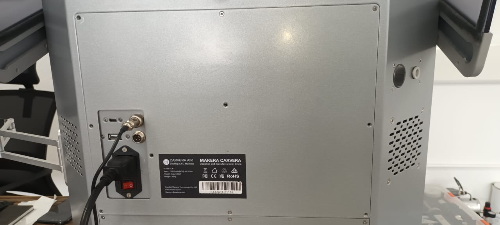
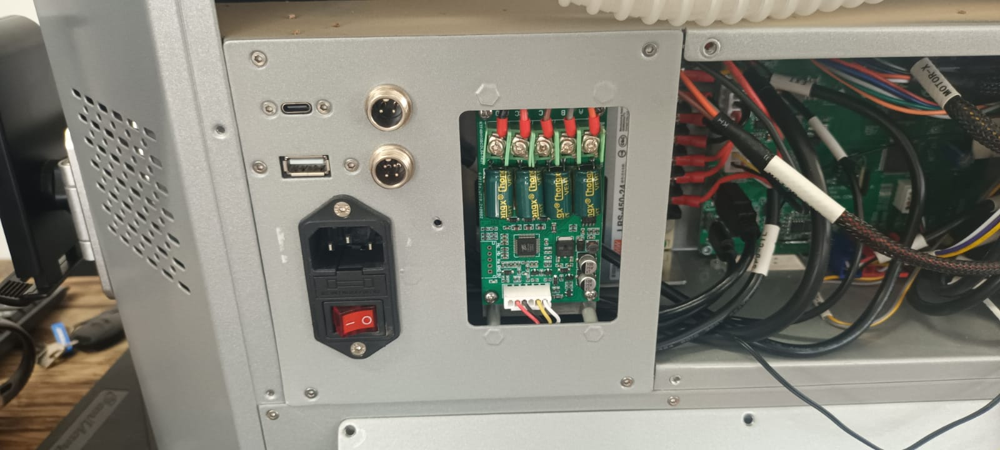
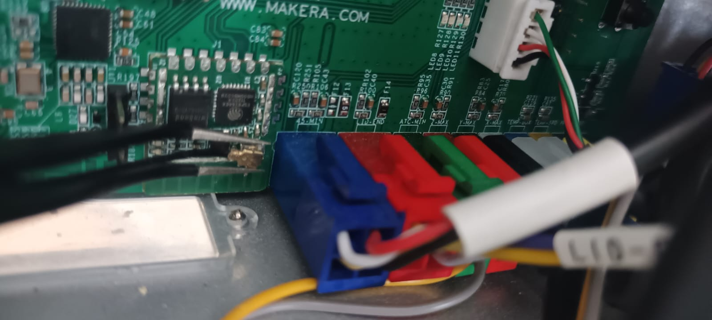
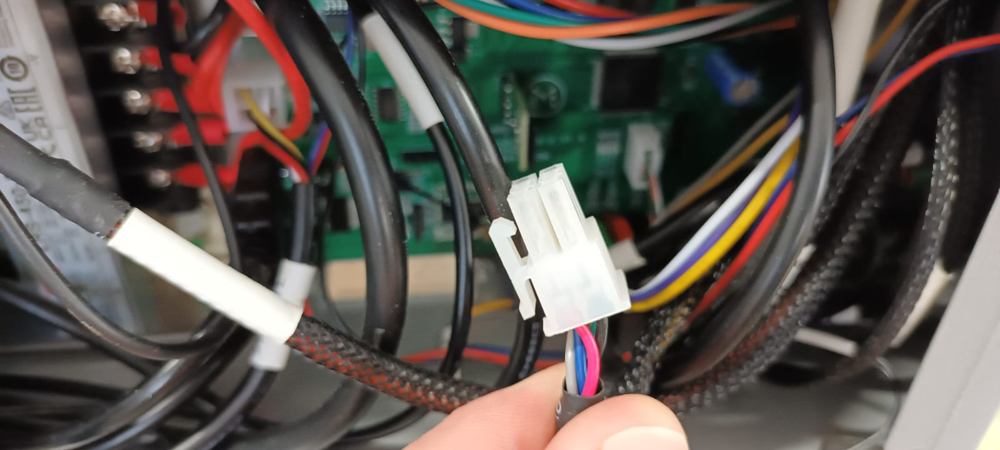
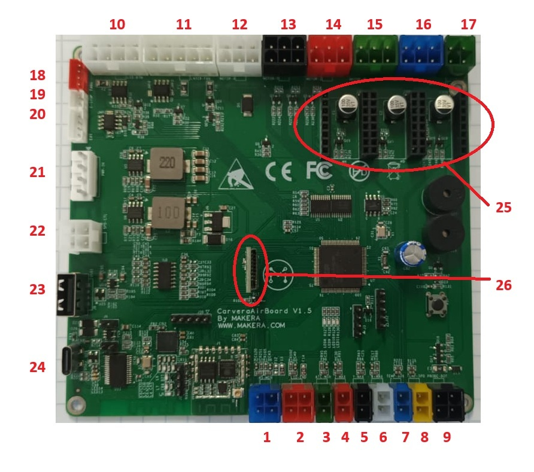
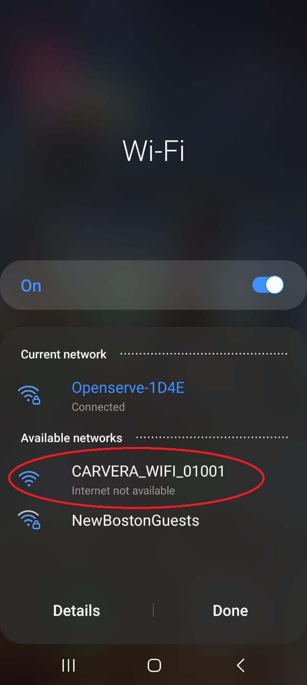
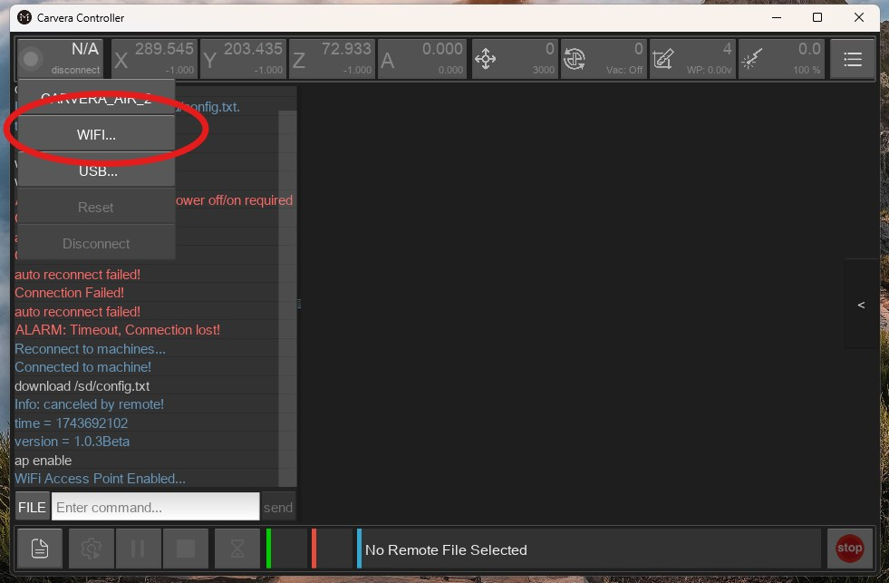
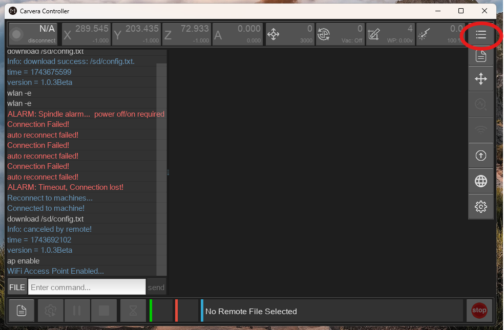
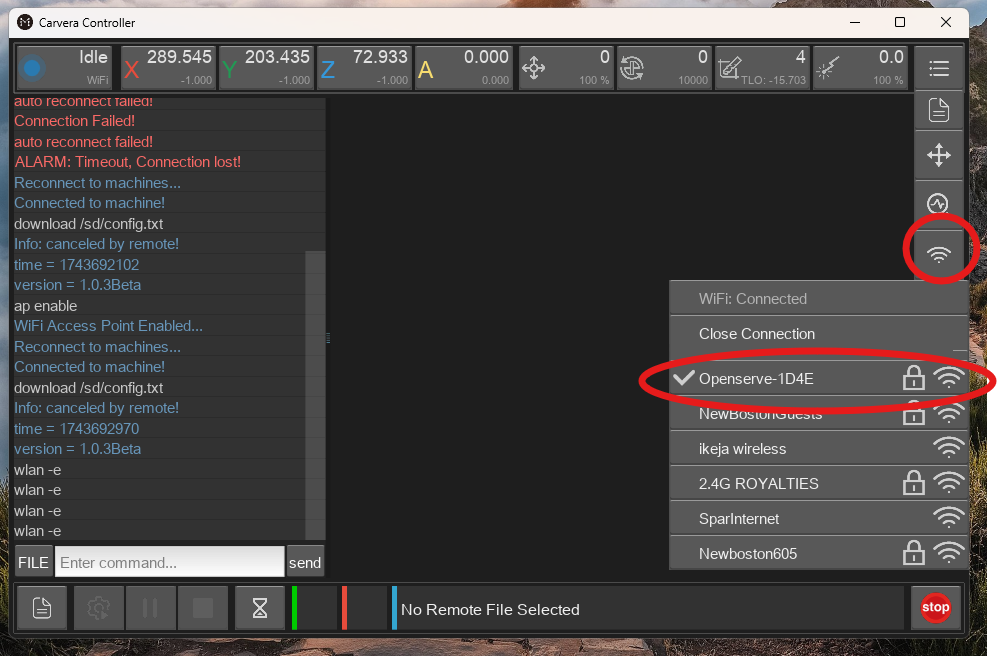

Technical Manual – Carvera Air Mainboard Replacement & Breakdown
1. Tools & Safety Precautions
Tools Required:
3mm Allen key
2mm Allen key
#2 Pozi screwdriver
Safety Precautions:
✔ Ensure the machine is powered off before proceeding.
✔ Unplug all cables before beginning the disassembly.
2. Removing the Existing Mainboard
2.1 Removing the Rear Cover
Using a screwdriver, unscrew and remove the top rear cover (Figure 1).

2.2 Unscrewing the Socket Cluster (Optional, for better access)
Remove the four screws securing the socket cluster.
This step is not mandatory but provides better access to the mainboard (Figure 2).

2.3 Disconnecting Cables & Wi-Fi Antenna
Unplug the USB cables first.
Carefully remove the Wi-Fi antenna using bent tweezers (Figure 3).

Work around the mainboard, unplugging all connectors:
Each connector has security clips on the sides that must be pressed before unplugging (Figure 4).

2.4 Removing the Mainboard Screws
The mainboard is secured by four screws (one at each corner).
Use a 3mm Allen key to unscrew them carefully (Figure 5).
Avoid dropping screws, as they may cause damage.
"A dropped part will always land where it can do the most damage." – Sod/Murphy’s Law
2.5 Transferring Components to the New Mainboard
Remove the SD card and drivers from the old mainboard.
Install them onto the new mainboard (Figure 5).
3. Installing the New Mainboard
3.1 Mounting the Mainboard
Align the new mainboard in place.
Secure it with screws using a 3mm Allen key.
3.2 Reconnecting the Wi-Fi Antenna
Use tweezers to position the Wi-Fi antenna over its socket.
Keep it parallel to the mainboard, then press it firmly into place.
A flat-end Allen key works well for this task.
3.3 Reconnecting All Cables
Starting from the right side, reconnect each cable to its corresponding header.

Use the diagram in Figure 5 for reference.
| 1 | 45min | 10 | LED Bin | 19 | E-stop |
|---|---|---|---|---|---|
| 2 | Lid End | 11 |
Laser module (Laser Probe) |
20 | Ext |
| 3 | ATC min | 12 | x Motor | 21 | Power |
| 4 | z max | 13 | y Motor | 22 | Spd ctr |
| 5 | y max | 14 | z Motor | 23 | USB 1 |
| 6 | x max | 15 | 4th Motor | 24 | USB 2 |
| 7 | Temp box | 16 | Motor 5 | 25 | Driver sockets |
| 8 | Temp spd | 17 | ATC motor | 26 | SD Card |
| 9 | Probe | 18 | Fan 1 |
Each connector is color-coded and labeled to prevent mistakes.
4. Setting Up Network Connection
4.1 Powering On the Machine
Reconnect the power supply and emergency stop (E-stop) button.
Turn on the machine.
4.2 Connecting to the Carvera Wi-Fi
On your PC or mobile device, search for available Wi-Fi networks.
Locate and connect to the Carvera Wi-Fi network, which appears as:
"Carvera_WiFi_*" (Figure 6).

Open the Carvera Controller App.
Search for your Carvera machine and connect (Figure 7).

4.3 Connecting to Your Local Network
Open the Tools menu (Figure 8).

Select the Wi-Fi symbol.
Choose your local network (Figure 9).

If prompted, enter your Wi-Fi password.
Once connected, reconnect your PC or phone to your normal network.
5. Final Steps & Verification
✔ Securely close the back panel.
✔ Verify that the machine powers on and connects properly.
✔ Your Carvera Air mainboard replacement is now complete! ✅